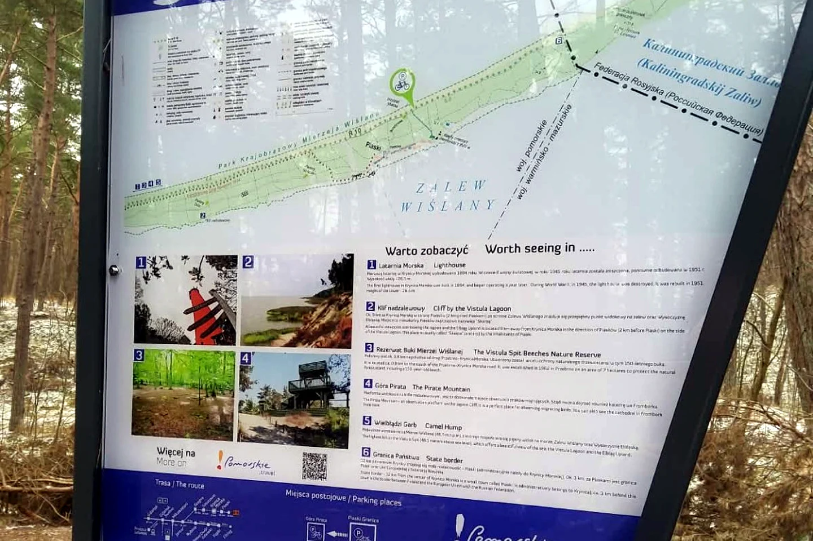

Odkryj Morze Bałtyckie
Od Świnoujścia po Pomorze i Piaski: nadmorskie miasta, pomysły na podróże i moje osobiste relacje z polskiego Morza Bałtyckiego.
Polskie Morze Bałtyckie zasługuje na osobną kategorię: od Świnoujścia na zachodzie przez Pomorze Przednie i Pomorze aż do Piaski na Mierzei Wiśli, blisko granicy z rosyjskim terytorium Kaliningradu. Tutaj pomysły na kolejne pobyty łączą się z moimi już opublikowanymi raportami podróży.
Z zachodu na wschód
- Świnoujście i Międzyzdroje: Miasteczko na wyspie, plaża i promenada jako punkt startowy; następnie molo Międzyzdroje i krajobraz na Wolinie.
- Rewal, Kołobrzeg i Darłowo: Połącz dni na plaży z wizytami w mieście. W Kołobrzegu na liście znajdują się port i latarnia morska, a w Darłowie zamek książąt pomorskich.
- Ustka i Łeba: Miejsca w porcie na spacery oraz prywatna wycieczka po krajobrazie wydm w pobliżu Parku Narodowego Słowińskiego. Zostawiłabym na to czas poza dniami samej jazdy.
- Gdynia, Sopot i Gdańsk: Trójmiasto samo w sobie warto odwiedzić. Moją osobistą perspektywę na temat Gdańska i sąsiednich miast znajdziesz w podlinkowanym raporcie.
- Krynica Morska i Piaski: Kontynuuj do mierzei wiślańskiej między Morzem Bałtyckim a Zalewem Wiślskim. Mój raport z Piaski opisuje ten wyjątkowy koniec mojej trasy.
To są moduły podróży w kolejności geograficznej, a nie plan na jeden dzień. Dla mnie warto zatrzymać się kilka nocy w wybranych miejscach i zapewnić sobie wystarczająco dużo wolnego czasu na plaży pomiędzy.
Gdańsk i Trójmiasto
Mój osobisty raport o Gdańsku, Sopocie, Gdyni i Bernsteinie.

Osobisty raport z podróżyPiaski – na końcu mojej trasy
Las, Mierzeja Wiśła i widok na granicę.
Mój pomysł na wycieczkę nadmorską
Podzieliłabym wybrzeże na części: najpierw Pomorze Zachodnie, potem środkowe wybrzeże, a na końcu Mierzeję Dreistadt i Mierzeję Wiślańską. Dzięki temu wybór pozostaje użyteczny nawet na krótsze wakacje. Jeśli masz tylko tydzień, wybierasz sekcję. Deszczowy dzień może stać się dniem miasta; przy dobrej pogodzie więcej czasu spędza się nad morzem.
Piaski są tutaj końcowym punktem po stronie polskiej. Trasa nie przekracza granicy państwowej. Na terenie obiektu spacery prowadzą według oznakowanych ścieżek i dostępnych miejsc.